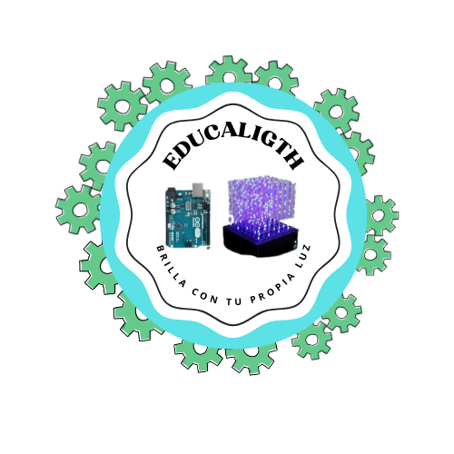
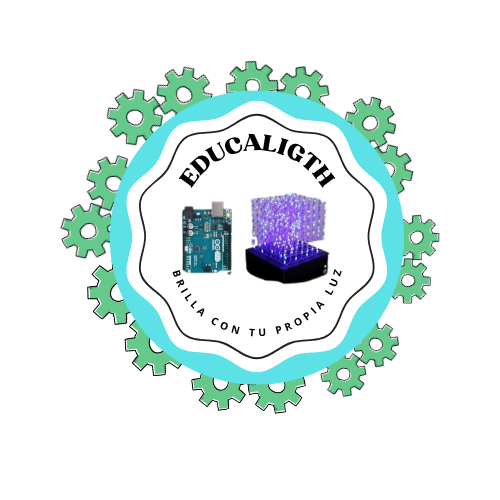

📂 Introducción

Bienvenidos

Bienvenidos
El aporte del Proyecto Educativo que involucra la interacción de los estudiantes con el cubo LED denominado "Colores del Futuro: Cubo LED", es profundamente significativo en el ámbito educativo, al conectar directamente el aprendizaje de enseñar matrices con su aplicación práctica. El cubo LED, fortalece la habilidad de abstracción, la explicación de como soldar y pasos a seguir para la construcción del Cubo LED, su programación de matrices y diseño estructural, proporciona una experiencia de aprendizaje inmersiva y efectiva.
EDUCALIGTH
Estudiantes del Séptimo ciclo de la Carrera de Pedagogía de las Ciencias Experimentales Informática de la Universidad Nacional de Loja.
Objetivo General:
Objetivos Específicos:
Los estudiantes desarrollan una amplia variedad de competencias al participar en proyectos de Robótica Educativa, entre las que se incluyen habilidades tecnológicas, fundamentos de programación, pensamiento crítico, innovación creativa, habilidades matemáticas y capacidad de colaboración.
Los estudiantes deben tener conocimientos previos en los siguientes conceptos:
Estos conocimientos previos permitirán a los docentes guiar a los estudiantes durante la construcción del proyecto de Robótica Educativa.
Las actividades a desarrollar tendrán un tiempo de 5 horas por semana, las mismas que cuentan con 4 semanas.
Semana 1: Se socializará la propuesta del proyecto y su finalidad, añadiendo la introducción a las plataformas de Tinkercad, mBlock y Arduino IDE.
Semana 2: Introducción de conceptos básicos de electrónica de como soldar, componentes necesarios y uso correcto.
Semana 3: Práctica con LEDS, arduino UNO, Cautín, estaño y ejercicios prácticos en la plataforma Tinkercad y mBlock.
Semana 4: Costrucción del proyecto Cubo LED en físico.
Este proyecto es un curso de programación o electrónica en una escuela o universidad, donde los estudiantes son jóvenes o adultos interesados en aprender sobre estos temas. A través de la construcción y programación, los estudiantes tendrán la oportunidad de experimentar con la tecnología de Arduino y desarrollar habilidades técnicas y de pensamiento computacional. Este proyecto ofrece una experiencia de aprendizaje práctico y desafiante para los estudiantes.
Obra publicada con Licencia Creative Commons Reconocimiento Compartir igual 4.0